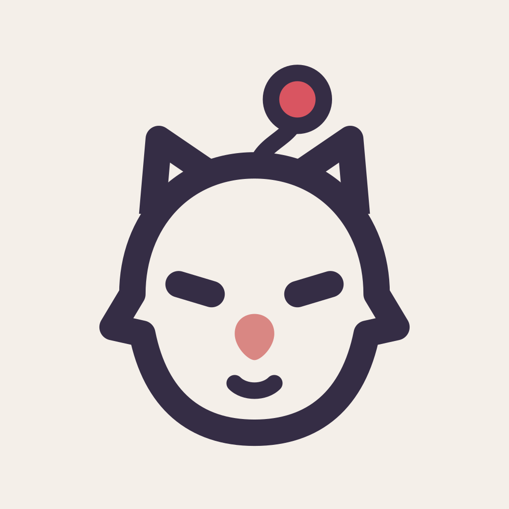
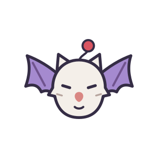

Copilot or your own server
Choose a model available through your GitHub Copilot account or connect an OpenAI-compatible server, including one you run locally.

GitHubMoguri is a desktop app and terminal UI for AI coding. Use your GitHub Copilot account or connect an OpenAI-compatible model server. Both clients use the same session history and approvals.
Local or SSH execution. Manual approvals by default.

Session settings
Choose the model, execution environment, autonomy level, and budget separately. Desktop and terminal sessions use the same controls.
Choose a model available through your GitHub Copilot account or connect an OpenAI-compatible server, including one you run locally.
Run work on your machine or on a pinned SSH host. Sandbox execution requires a separate setup review and a runtime that has passed containment checks.
Manual mode leaves tool approvals to you. Higher autonomy doesn't override hard denials, read-only rules, or environment restrictions.
Moguri saves drafts, queued prompts, and session history across restarts. You can inspect tool arguments, results, and reported usage.
Interfaces
The desktop app and terminal clients use the same SDK. A local service stores session history and handles approvals.
Open conversations, files, and code changes in one app. Review plans and tool requests in the current session.
The OpenTUI client streams replies and shows tool output. Choose Queue, Steer, or Interrupt when sending a prompt during ongoing work.
The SDK exposes session, model, permission, and tool APIs. Moguri's desktop and terminal clients use those APIs too.
It also includes a native MCP gateway.
SDK guideDevelopment
The desktop app, terminal clients, and SDK are implemented. Sandbox validation, advanced Kupo workflows, and public distribution are still in progress.
GitHub
See the project directory and follow updates in the Moguri GitHub organization.